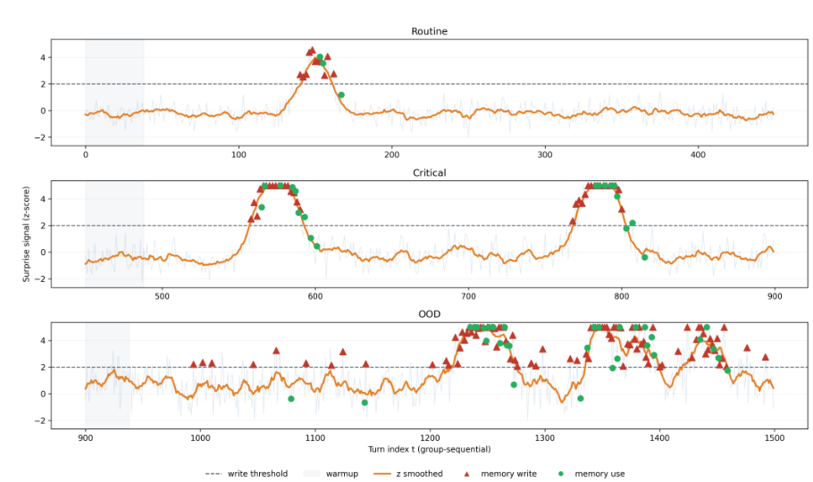
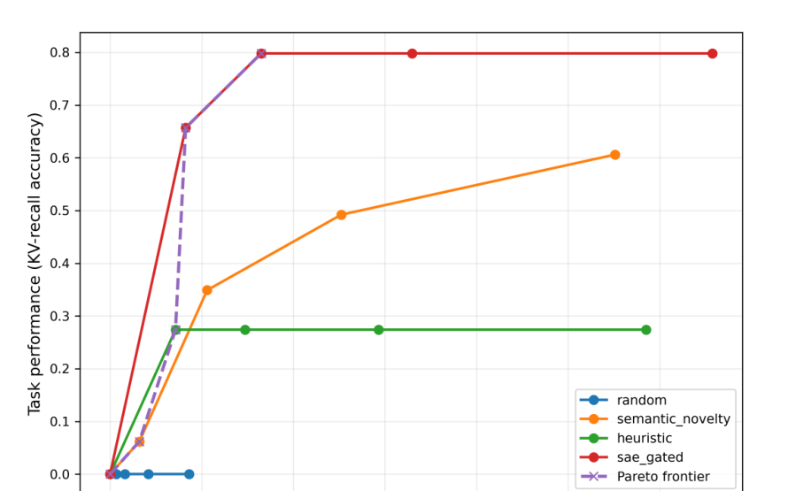

Intrinsic Memory Signal
Memory writes are not driven by hand-crafted prompts or lexical novelty. They emerge from the model's own latent geometry.
ICLR 2026 Workshop MemAgents
An unsupervised memory mechanism for LLM agents where episodic writes are triggered by representational surprise measured through sparse autoencoder reconstruction failure.
Advanced Knowledge Center for Immersive Technologies (AKCIT), Federal University of Goias
Long-term memory in Large Language Model agents requires selectivity: only a subset of interactions should be consolidated beyond the current context window. ReSuME approaches this as a geometric problem. We approximate the manifold of routine LLM activations with Sparse Autoencoders and define representational surprise as reconstruction error relative to that learned manifold. Turns that resist compression are treated as episodically salient. Across multi-turn dialogue settings, this surprise signal separates routine, critical, and out-of-distribution states while improving the performance-memory trade-off under fixed budgets.
Memory writes are not driven by hand-crafted prompts or lexical novelty. They emerge from the model's own latent geometry.
ReSuME only stores turns whose normalized residual exceeds a calibrated threshold, keeping the memory bank selective under fixed capacity.
Surprise remains discriminative across conversational, legal, medical, code, finance, and science domains, supporting portable memory calibration.
e_t = ||x_t - x_hat_t||_2
s_t = alpha * u_t + (1 - alpha) * s_(t-1)
write if s_t > tau
The write gate and use gate are decoupled: surprise controls storage, similarity controls retrieval.
Official figures extracted from the paper PDF.


| Competency | Task | RAG | ReSuME | Delta |
|---|---|---|---|---|
| AR | SH-Doc QA | 79.3 | 83.0 | +3.7 |
| AR | LongMemEval | 61.9 | 68.3 | +6.4 |
| TTL | CLINC150 | 88.6 | 93.0 | +4.4 |
| TTL | Movie Rec | 19.0 | 25.0 | +6.0 |
| SF | FactConsol-SH | 37.6 | 43.8 | +6.2 |
ReSuME reframes memory writing as compression failure relative to a learned manifold of routine latent states.
Covariance-aware residual modeling improves separation between critical and out-of-distribution turns.
Intermediate layers better capture critical state changes, while deeper layers more strongly isolate OOD anomalies.
Surprise-gated writing achieves a stronger performance-memory frontier than heuristic and similarity-based alternatives.